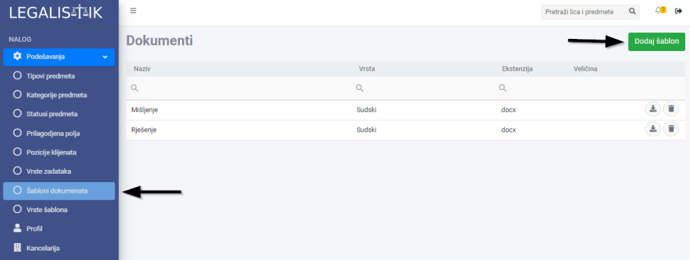
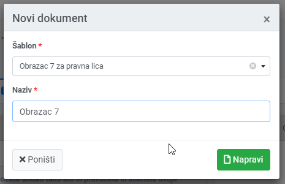
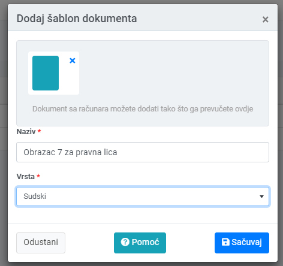

Koliko puta ste novi dokument pravili tako što kopirate sadržaj iz starijih dokumenta i mijenjali datume i nazive klijenata. Sada možete koristiti šablone i ubrzati proces izrade novih dokumenata nekoliko puta.
Šabloni su unaprijed pripremljeni dokumenti koji imaju popunjene dijelove koji se ne mijenjaju od predmeta do predmeta, ali i zamjenska polja, koja se popunjavaju iz osnovnih informacija predmeta. Koristeći šablone ubrzavamo rad na dokumentima i pripremu materijala za predmete.
Izrada šablona #
Prije dodavanja šablona u Legalistik, potrebno ga je prethodno pripremiti na način da u Word dokument na računaru dodamo zamjenska polja na željena mjesta. Ta zamjenska polja će se kasnije automatski popunjavati pri kreiranju dokumenata unutar predmeta. U primjeru ispod smo ubacili zamjensko polje [Datum] unutar dokumenta:

Lista zamjenskih polja koja možete ubaciti u šablone je sledeća:
[Datum]
[Predmet.Broj]
[Predmet.BrojSud]
[Predmet.VrijednostSpora]
[Predmet.VrstaSpora]
[Predmet.Sud]
[Predmet.Sudija]
[Predmet.Naziv]
[Predmet.DatumPrijema]
[Predmet.Status]
[Predmet.StrucniSaradnik]
[Klijent.Ime]
[Klijent.JIB]
[Klijent.PIB]
[Klijent.Pozicija]
[Protivnik.Ime]
[Protivnik.Pozicija]
Dodavanje šablona u Legalistik #
Da bi dodali novi šablon potrebno je kliknuti na Šabloni dokumenata unutar Podešavanja. U gornjem desnom uglu kliknite na dugme Dodaj šablon:

Izaberite prethodno snimljen dokument i dajte mu naziv. Nakon što kliknete na dugme Napravi, šablon će biti dodan u listu dostupnih šablona:

Korištenje šablona za generisanje dokumenata #
Da bi iskoristili šablon za pravljenje novog dokumenta, otvorite željeni predmet i unutar kartice Dokumenti, kliknite na Radnje i izaberite Napravi dokument opciju:

Izaberite željeni šablon, dajte mu naziv i izaberite vrstu:

Novi dokument će biti dodan sa popunjenim zamjenskim poljima (u primjeru smo dodali Datum):